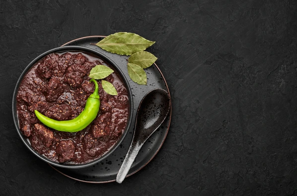

Chicken Dinuguan (Dinuguang Manok)

There are many varieties of dinuguan but most of the time pork blood, meat and internal organs are used in cooking. This dish, the chicken dinuguan uses chicken meat, blood and internal organs.
Compared to pork, chicken is cheaper but the only tedious part in cooking is cleaning and preparation of the internal organs.
This recipe requires live chicken so you can get the blood but if you can buy fresh chicken blood and internal organs for cooking, you can spare the task of slaughtering the live chicken yourself.
You can also use the blood and internal organs of the chicken from the Pinikpikan Recipe for this amazing Dinuguan dish
Chicken Dinuguan Recipe
Ingredients:
- 1 live chicken
- 1/2 kilo chicken liver, gizzard, and intenstines
- Chicken blood
- 1/2 cup vinegar
- 1/2 tsp. ground pepper
- oil for sauteing
- 2 cloves garlic (crushed)
- 1 pc. red onion (chopped)
- 1 tsp. sugar
- 1 tsp. fish sauce or patis
- 1 cup water
- 1/2. tsp. magic sarap
- 2 Tbsp. cooking oil
Instructions:
- Prepare a bowl with 1/2 cup vinegar. This is where you will put the blood from the chicken. Mix the blood and the vinegar for a few seconds and set aside.
- Get the internal organs from the chicken, gizzards, liver and small intestines and cut into cubes. Remove the bones from the chicken and cut the chicken meat (with the skin) into cubes.
You can also but additional gizzards, liver and intestines.
- Make sure to clean the internal organs thoroughly specially the intestines.
- In a small wok, heat the oil and saute the garlic and onion for at least 1 minute then put the cubed chicken meat and internal organs and saute for another 2 minutes
- Let it simmer in medium fire until the liquid is almost dry. Then pour 1 cup of water and simmer again until the meat and internal organs are cooked. Put the pepper and magic sarap when the liquid is already boiling.
- When the meat and internal organs are almost cooked, pour the chicken blood and put a little sugar to balance the taste of the vinegar in the blood.
- Mix until the blood starts to thicken. Add patis to improve the taste then serve hot.
Resources: